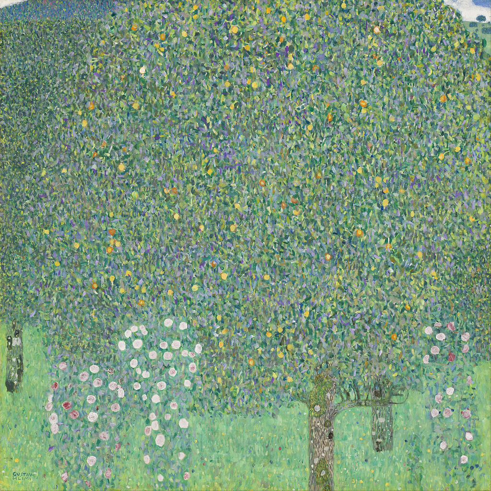

<head>
<meta charset="UTF-8" />
<meta name="keywords" content="drawing, painting" />
<meta name="description" content="drawings by Sunjy" />
<title>Sunjy</title>
<link rel="shortcut icon" type="image/x-icon" href="../../mImages/mCommon/favicon.ico" media="screen" />
<link rel="stylesheet" type="text/css" href="../../mCsses/mCommon/mCssA.css" />
<link rel="stylesheet" type="text/css" href="../../mCsses/mCommon/mCssB.css" />
<link rel="stylesheet" type="text/css" href="../../mCsses/mCommon/mCssC.css" />
<link rel="stylesheet" type="text/css" href="../../mCsses/mCommon/mCssD.css" />
<link rel="stylesheet" type="text/css" href="../../mCsses/mContent/mCssA.css" />
<link rel="stylesheet" type="text/css" href="../../mCsses/mContent/mCssB.css" />
<link rel="stylesheet" type="text/css" href="../../mCsses/mContent/mCssC.css" />
<link rel="stylesheet" type="text/css" href="../../mCsses/mContent/mCssD.css" />
</head>
<script type="text/javascript" src="../../mScripts/mContent/mContentAA.js" /></script>
<script type="text/javascript" src="../../mScripts/mContent/mContentAB.js" /></script>
<script type="text/javascript" src="../../mScripts/mContent/mContentAC.js" /></script>
<script type="text/javascript" src="../../mScripts/mContent/mContentAD.js" /></script>
<script type="text/javascript"></script> 
<script type="text/javascript">
document.write('<div class="mImgAbsolute"></div>');
/*
document.write('<p class="mFontSizeBColor" />From a white paper...</p>');
document.write('<table class="center"><tr><td>');
document.write('');
document.write('</td></tr></table>');
*/
</script>


<script type="text/javascript">
document.write('<p class="mFontSizeBColor" />Rosebushes under the Trees</p>');
document.write('<p class="mFontSizeSColor" />“Rosebushes under the Trees” by Gustav Klimt was created during the artist’s summer holidays of 1904 and 1905 when he stayed in Litzlberg.<br><br>The canvas is covered with dabs of color and small brush strokes in the style of a mosaic. The tree foliage, above a narrow band of grass meadow, forms the main part of the composition.<br><br>The title of the painting derives from the rose bushes in the foreground under the trees.<br><br>Klimt created a composition of small dabs of paint, ranging from light to dark green, with contrasting tones of pink, mauve, and yellow.<br><br>The color flecks dissolve the landscape elements into the rudimentary tree trunks, which identify an orchard. The sky is visible, only tiny gaps as the top corners.<br></p>');
document.write('<table class="center" /><tr><td>');
document.write('<br>The canvas is covered with dabs of color and small brush strokes in the style of a mosaic. The tree foliage, above a narrow band of grass meadow, forms the main part of the composition.<br><br>The title of the painting derives from the rose bushes in the foreground under the trees.<br><br>Klimt created a composition of small dabs of paint, ranging from light to dark green, with contrasting tones of pink, mauve, and yellow.<br><br>The color flecks dissolve the landscape elements into the rudimentary tree trunks, which identify an orchard. The sky is visible, only tiny gaps as the top corners.<br>" />');
document.write('</td></tr></table>');
</script>


